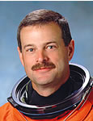

Lyndon B. Johnson Space Center
Houston, Texas 77058
|
National Aeronautics and Space Administration Lyndon B. Johnson Space Center Houston, Texas 77058 |
 |
Biographical Data |
||
Scott D. Altman (Captain, USN, Ret.)
NASA ASTRONAUT (FORMER)
PERSONAL DATA: Born August 15, 1959 in Lincoln, Illinois. Married to the former Jill Shannon Loomer of Tucson, Arizona. They have three children. Hometown is Pekin, Illinois, where his parents, Fred and Sharon Altman, currently reside.
EDUCATION: Graduated from Pekin Community High School, Pekin, Illinois in 1977; received bachelor of science degree in aeronautical and astronautical engineering from the University of Illinois in May 1981, and a master of science degree in aeronautical engineering from the Naval Postgraduate School in June 1990.
ORGANIZATIONS: University of Illinois Alumni Association, Sigma Chi Alumni Association, life member Association of Naval Aviation and Military Order of the World Wars.
SPECIAL HONORS: Defense Superior Service Medal, Legion of Merit, Distinguished Flying Cross, Defense Meritorious Service Medal, Navy Strike/Flight Air Medal, Navy Commendation Medal, Navy Achievement Medal, 1987 Award winner for Outstanding Achievement in Tactical Aviation as selected by the Association of Naval Aviation.
EXPERIENCE: Commissioned as an Ensign in the United States Navy in August 1981, received his Navy wings of gold in February 1983. Based at NAS Miramar, Altman completed two cruises flying the F-14A Tomcat. In August 1987, he was selected for the Navy Test Pilot School and graduated with Test Pilot School Class 97 in June 1990. Deploying in 1992 withVF-31 and the new F-14D, he was awarded the Navy Air Medal for his role as a strike leader flying over Southern Iraq. Following his return from this deployment, he was selected for the astronaut program. He has logged over 7000 flight hours in more than 40 types of aircraft.
NASA EXPERIENCE: Altman reported to the Johnson Space Center in March 1995 as an astronaut candidate. He was the pilot on STS-90 (1998) and STS-106 (2000), and the mission commander on STS-109 (2002) and STS-125 (2009). Following two years as Shuttle Branch Chief for the Astronaut Office and lead for the Cockpit Avionics Upgrade, he was assigned on temporary duty to NASA Headquarters as Deputy Director, Requirements Division of the Exploration Systems Mission Directorate. On returning to Houston, and following STS-125, he served as the Chief of the Exploration Branch of the Astronaut Office. A veteran of four space flights, Altman has logged over 51 days in space. Altman retired from NASA in September 2010 to join Asrc Research and Technology Solutions in Greenbelt, Maryland.
SPACE FLIGHT EXPERIENCE: STS-90 Neurolab (April 17 to May 3, 1998). During the 16-day Spacelab flight the seven person crew aboard Space Shuttle Columbia served as both experiment subjects and operators for 26 individual life science experiments focusing on the effects of microgravity on the brain and nervous system.
STS-106 Atlantis (September 8-20, 2000). During the 12-day mission, the crew successfully prepared the International Space Station for the arrival of the first permanent crew.
STS-109 Columbia (March 1-12, 2002). STS-109 was the fourth Hubble Space Telescope (HST) servicing mission. The STS-109 crew successfully upgraded the Hubble Space Telescope leaving it with a new power unit, a new camera and new solar arrays. HST servicing and upgrade was accomplished during a total of 5 EVAs in 5 consecutive days. STS-109 orbited the Earth 165 times, and covered 3.9 million miles in over 262 hours, culminating in a night landing at Kennedy Space Center, Florida.
STS-125 Atlantis (May 11-24, 2009) was the fifth and final Hubble servicing mission. The 19 year old telescope spent seven days in the Shuttle’s cargo bay undergoing an overhaul conducted over five back to back spacewalks. The crew overcame frozen bolts, stripped screws, and stuck handrails to complete all mission objectives. The refurbished Hubble Telescope now has four new or rejuvenated scientific instruments, new batteries, new gyroscopes, and a new Command and Data Handling computer. The STS-125 mission traveled over 5.3 million miles in 197 Earth orbits, and ended with a day landing at Edwards AFB following two days of wave offs due to poor weather in Florida.
SEPTEMBER 2010